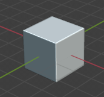
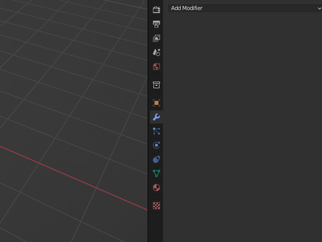
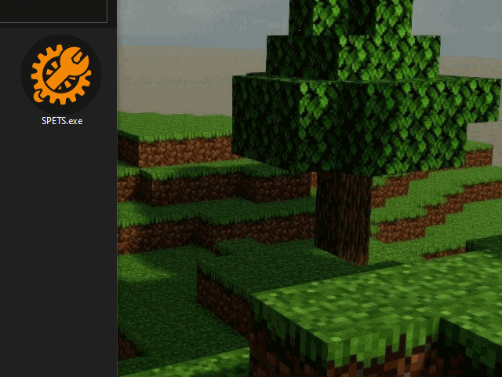

Importing Tutorial
In this tutorial we'll go through the basic steps of how to import a 3d model into Sprocket.
note; some programs, such as Fusion360, have a different format on Wavefront files which SPETS don't support, so i strongly recommend you use blender
Preparing the model


The first step is to have a model. You can make one yourself in a program like Blender or download one online. For this tutorial i will be using the default blender cube.
Note that one meter will equal one meter in Sprocket later.
It is recommended to tesselate the model before exporting to prevent any potentional error within SPETS.
In blender this can be done by using a Triangulate modifier. For best result, set Minimum Vertices to 5. Then press Apply.
Importing using SPETS

Now if you haven't already, download SPETS.
Open SPETS.exe and select "Import from OBJ" from the dropdown. Click Load and select your exported .obj file.
A new window should now have popped up. Select the faction you want to model in, if you're uncertain choose Default. Press Import and wait for it to finish loading. Your model might take longer to import depending on the file size.
Loading the compartment

Now it's time to fire up Sprocket. Make sure you're in the correct faction and load the compartment. To import a turret, place a freemform turret on your vehicle and load the compartment from there.
The model should now have appeared in game, wohoo!
You can now manipulate it as you would any other Freeform tank.